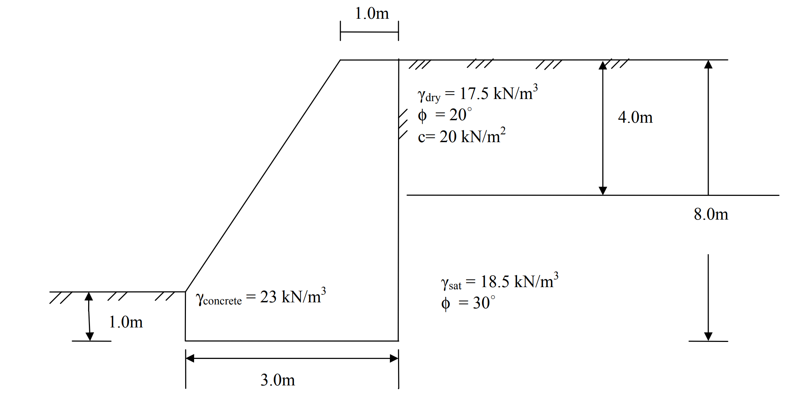
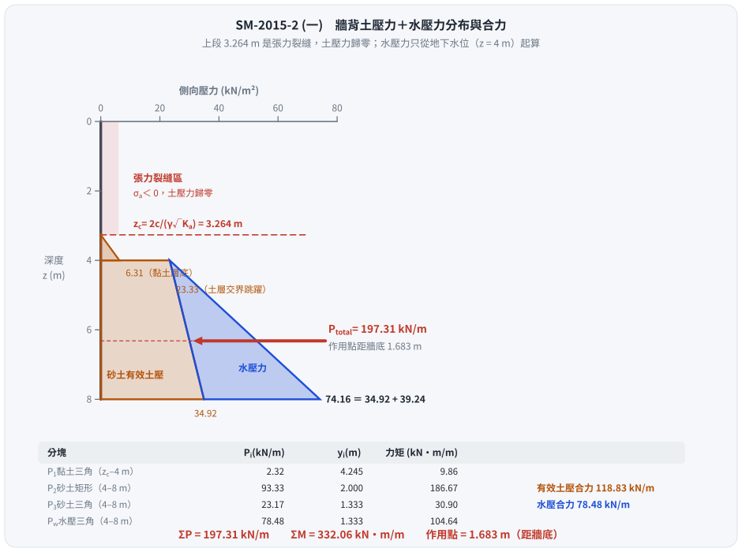
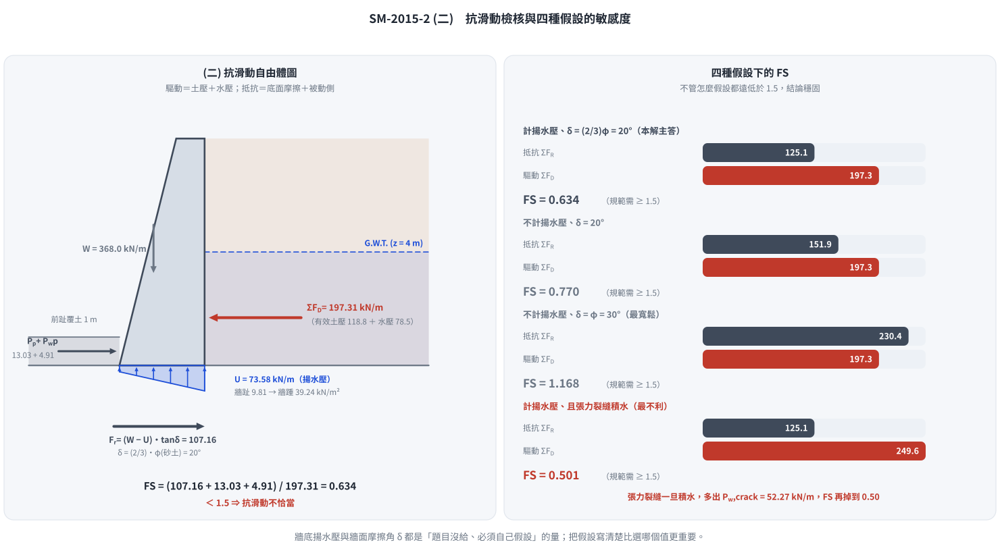

考題編號：SM-2015-2
主分類： SM-U3-1 側向土壓力理論
副分類： SM-U3-2 擋土結構物穩定分析
分析法： 有效應力法
標籤： Rankine主動土壓力 張力裂縫 土壓力合力作用點 孔隙水壓 抗滑動 安全係數
1. 原始題目重述 (Problem Restatement)
有一正常壓密黏土厚 4.0 m，其 $\gamma_{dry} = 17.5 \text{ kN/m}^3$，摩擦角 $\phi = 20^\circ$，凝聚力 $c = 20 \text{ kN/m}^2$，下方為砂土層 $\gamma_{sat} = 18.5 \text{ kN/m}^3$，摩擦角 $\phi = 30^\circ$，該土層之地下水位面位於地表以下 4.0 m。現擬建一 8.0 m 高之擋土牆，其牆背為垂直。
(一) 利用倫金理論（Rankine）計算並繪出牆背所受土壓力分布，並計算其合力及合力作用位置。（15 分）
(二) 檢核擋土牆之抗滑動安全係數是否恰當。（10 分）

圖說：牆體高度 8.0 m，頂寬 1.0 m，底寬 3.0 m。前趾覆土深度 1.0 m。牆體為混凝土，單位重 $\gamma_{concrete} = 23 \text{ kN/m}^3$。第一層黏土 0~4.0 m，第二層砂土 4.0~8.0 m，地下水位在 4.0 m 深處。
2. 考題核心精神與出題者意圖 (Core Concepts & Examiner's Intent)
- Rankine 側向土壓力分布與張力裂縫：測驗考生是否知道黏土層頂部會產生張力裂縫，且在計算合力時需忽略張力區（深度 $z_c$ 以內）之負值土壓力。
- 多層土與地下水位之有效應力分析：測驗在地下水位面以下需切換為有效單位重 $\gamma'$ 及計算水壓力，且水壓力應與土壓力疊加。
- 擋土牆抗滑動穩定分析：測驗對驅動力與抵抗力的全面考量。驅動力包含牆背的總側向推力（土壓力加水壓力）；抵抗力包含牆底摩擦力與牆前被動土壓力。其中，牆底揚水壓（Uplift pressure）是否考慮、以及摩擦角 $\delta$ 的選取，是鑑別程度的關鍵。
3. 解題戰略地圖與陷阱分析 (Strategic Roadmap & Trap Analysis)
步驟化戰略：
- 求出各土層參數與 $K_a$、$K_p$：黏土層與砂土層之主動土壓力係數。
- 計算有效應力與主動土壓力分布：分層求出 $z=0, 4, 8\text{ m}$ 的 $\sigma_v'$ 與 $\sigma_a'$。特別求出黏土層的張力裂縫深度 $z_c$。
- 計算合力與作用點：將有效土壓力分布切分為三角形與矩形，計算各自面積與力臂，並加上水壓力分布，求得總合力與合力作用點高度。
- 計算牆身自重與揚水壓：依牆體幾何求出自重 $W$，假設被動側水位於地表（$z=7\text{ m}$），計算底面揚水壓 $U$，得有效自重 $W'$。
- 檢核抗滑動安全係數：求出底面抗滑摩擦力 $F_r$ 與被動土壓力 $P_p$，並與總驅動力對比，判斷 $FS \ge 1.5$ 是否成立。
陷阱分析：
- ⚠ 張力裂縫處理：若直接將 $z=0$ 到 $z=4$ 積分，會誤將負土壓力（拉力）納入抵抗推力，導致不保守。必須求出 $z_c$，僅計算正土壓力區域。
- ⚠ 水壓力之遺漏：Rankine 公式只計算「有效土壓力」，若忘記加上水壓力 $P_w$，會大幅低估總推力。
- ⚠ 底部揚水壓與摩擦角假設：滑動分析時，牆底往往存在揚水壓力（Uplift），會減少有效正向力，進而降低摩擦力。此外，若題目未給定底面摩擦角 $\delta$，依慣例常取 $\delta = \frac{2}{3}\phi_2$（或保守取值），需於計算中清楚標示假設。
3.5 變數層次分析 (Variable Hierarchy Analysis)
最終目標
計算牆背土壓力合力與作用點，並檢核擋土牆抗滑動安全係數（FS）。
本題關鍵公式（依計算順序）
- 主動土壓力係數：$K_a = \tan^2(45^\circ - \frac{\phi}{2})$
- 主動土壓力：$\sigma_a' = \sigma_v' \cdot \boxed{K_a} - 2c\sqrt{\boxed{K_a}}$
- 張力裂縫深度：$z_c = \frac{2c}{\gamma \sqrt{\boxed{K_a}}}$
- 主動土壓力合力與水壓力：$P = \frac{1}{2}\sigma_{a,bottom}' H_{eff}$, $P_w = \frac{1}{2}\gamma_w H_w^2$
- 總驅動力與總抵抗力：$\Sigma F_D = \Sigma \boxed{P} + \boxed{P_{w,a}}$，$\Sigma F_R = W'\tan\delta + P_p$
- 抗滑安全係數：$FS = \frac{\Sigma \boxed{F_R}}{\Sigma \boxed{F_D}}$
L1：題目直接給定
| 符號 | 數值 | 說明 |
|---|---|---|
| $H$ | 8.0 m | 擋土牆總高度 |
| $\gamma_{dry}$ | 17.5 kN/m³ | 第一層（黏土）乾燥單位重 |
| $c_1, \phi_1$ | 20 kN/m², 20° | 第一層（黏土）凝聚力與摩擦角 |
| $\gamma_{sat}$ | 18.5 kN/m³ | 第二層（砂土）飽和單位重 |
| $c_2, \phi_2$ | 0, 30° | 第二層（砂土）凝聚力與摩擦角 |
| $\gamma_{conc}$ | 23 kN/m³ | 混凝土單位重 |
L2：需知識點推導
土壓力與水壓力分布
| 符號 | 公式／來源 | 卡關? |
|---|---|---|
| $K_{a1}, K_{a2}$ | $\tan^2(45^\circ - \phi/2)$ | |
| $z_c$ | $2c / (\gamma \sqrt{K_a})$ | |
| $\gamma'$ | $\gamma_{sat} - \gamma_w$ | |
| $P_w$ | $0.5 \cdot \gamma_w \cdot h_w^2$ | |
抗滑穩定檢核
| 符號 | 公式／來源 | 卡關? |
|---|---|---|
| $W$ | $Area \cdot \gamma_{conc}$ | |
| $U$ | 牆底揚水壓（假設分佈面積積） | |
| $F_r$ | $(W - U) \cdot \tan\delta$ | |
| $FS$ | $(\Sigma F_R) / (\Sigma F_D)$ | |
L3：深層知識（不懂就卡住）
| 知識點 | 說明 | 卡關? |
|---|---|---|
| 張力裂縫 | 黏土層上部受拉，與牆面脫離不計土壓力，受力起點為 $z_c$ | |
| 揚水壓力(Uplift) | 滑動檢核中，底面水壓會降低有效自重，若忽略不計則偏於不安全 |
4. 步驟化詳細計算過程 (Step-by-Step Detailed Calculation)
(一) 牆背土壓力分布、合力及作用位置
Step 1：各土層參數與 $K_a$ 計算
- 假設水單位重 $\gamma_w = 9.81 \text{ kN/m}^3$。
- 第一層黏土 (0~4.0 m)：$c_1 = 20 \text{ kN/m}^2$, $\phi_1 = 20^\circ$
$$K_{a1} = \tan^2\left(45^\circ - \frac{20^\circ}{2}\right) = \tan^2(35^\circ) = 0.4903$$ - 第二層砂土 (4.0~8.0 m)：$c_2 = 0$, $\phi_2 = 30^\circ$, $\gamma' = 18.5 - 9.81 = 8.69 \text{ kN/m}^3$
$$K_{a2} = \tan^2\left(45^\circ - \frac{30^\circ}{2}\right) = \tan^2(30^\circ) = 0.3333$$
Step 2：計算各深度之有效垂直應力與有效主動土壓力
使用公式：$\sigma_a' = \sigma_v' \cdot K_a - 2c\sqrt{K_a}$
-
深度 $z=0 \text{ m}$ (牆頂)：
$\sigma_v' = 0$
$\sigma_{a1}' = 0 - 2(20)\sqrt{0.4903} = -28.01 \text{ kN/m}^2$ (張力)
張力裂縫深度 $z_c$：
$$z_c = \frac{2c_1}{\gamma_{dry}\sqrt{K_{a1}}} = \frac{2(20)}{17.5 \times 0.70021} = \frac{40}{12.2536} = 3.264 \text{ m}$$
（在 $z \le 3.264 \text{ m}$ 範圍內，土壓力視為 0） -
深度 $z=4.0 \text{ m}$ (黏土層底部)：
$\sigma_v' = 17.5 \times 4.0 = 70.0 \text{ kN/m}^2$
$\sigma_{a1}' = 70.0 \times 0.4903 - 28.01 = 34.32 - 28.01 = 6.31 \text{ kN/m}^2$ -
深度 $z=4.0 \text{ m}$ (砂土層頂部)：
$\sigma_v' = 70.0 \text{ kN/m}^2$
$\sigma_{a2}' = 70.0 \times 0.3333 = 23.33 \text{ kN/m}^2$ -
深度 $z=8.0 \text{ m}$ (砂土層底部)：
$\sigma_v' = 70.0 + 8.69 \times 4.0 = 70.0 + 34.76 = 104.76 \text{ kN/m}^2$
$\sigma_{a2}' = 104.76 \times 0.3333 = 34.92 \text{ kN/m}^2$
水壓力：$u = 9.81 \times 4.0 = 39.24 \text{ kN/m}^2$
土壓力分布圖繪製說明：
- $0 \sim 3.264 \text{ m}$：土壓力為 $0$。
- $3.264 \sim 4.0 \text{ m}$：有效土壓力由 $0$ 增加至 $6.31 \text{ kN/m}^2$。
- $4.0 \sim 8.0 \text{ m}$：有效土壓力由 $23.33 \text{ kN/m}^2$ 梯形增加至 $34.92 \text{ kN/m}^2$。
- $4.0 \sim 8.0 \text{ m}$ 水壓力：由 $0$ 三角形增加至 $39.24 \text{ kN/m}^2$。
Step 3：計算合力及其作用位置 (對牆底 $z=8 \text{ m}$ 取矩)
將受力圖分割為簡單幾何圖形：
-
$P_1$ (黏土層三角形有效土壓力)：
$P_1 = \frac{1}{2} \times 6.31 \times (4.0 - 3.264) = 2.32 \text{ kN/m}$
力臂 $y_1 = 4.0 + \frac{0.736}{3} = 4.245 \text{ m}$
力矩 $M_1 = 2.32 \times 4.245 = 9.85 \text{ kN-m/m}$ -
$P_2$ (砂土層矩形有效土壓力)：
$P_2 = 23.33 \times 4.0 = 93.32 \text{ kN/m}$
力臂 $y_2 = \frac{4.0}{2} = 2.0 \text{ m}$
力矩 $M_2 = 93.32 \times 2.0 = 186.64 \text{ kN-m/m}$ -
$P_3$ (砂土層三角形有效土壓力)：
$P_3 = \frac{1}{2} \times (34.92 - 23.33) \times 4.0 = \frac{1}{2} \times 11.59 \times 4.0 = 23.18 \text{ kN/m}$
力臂 $y_3 = \frac{4.0}{3} = 1.333 \text{ m}$
力矩 $M_3 = 23.18 \times 1.333 = 30.90 \text{ kN-m/m}$ -
$P_w$ (水壓力)：
$P_w = \frac{1}{2} \times 39.24 \times 4.0 = 78.48 \text{ kN/m}$
力臂 $y_w = \frac{4.0}{3} = 1.333 \text{ m}$
力矩 $M_w = 78.48 \times 1.333 = 104.64 \text{ kN-m/m}$
總合力計算：
註：一般題目「牆背所受土壓力合力」泛指側向總推力，故包含水壓力。
總側向推力 $P_{total} = P_1 + P_2 + P_3 + P_w$
$P_{total} = 2.32 + 93.32 + 23.18 + 78.48 = \boxed{197.30 \text{ kN/m}}$
(若僅計算有效土壓力合力，則為 $P_a = 2.32 + 93.32 + 23.18 = 118.82 \text{ kN/m}$)
合力作用位置（距牆底）：
總力矩 $\Sigma M_{base} = 9.85 + 186.64 + 30.90 + 104.64 = 332.03 \text{ kN-m/m}$
作用高度 $\bar{y} = \frac{\Sigma M_{base}}{P_{total}} = \frac{332.03}{197.30} = \boxed{1.683 \text{ m}}$

圖 1 (一) 的壓力分布與合力。攔的是「把張力區的負值積分進去」——圖上 $0 \sim z_c$ 一段完全空白；若從 $z = 0$ 積到 $z = 4$，負土壓會抵掉一部分推力，$P_{total}$ 被低估、結論反而偏不安全。
(二) 檢核擋土牆之抗滑動安全係數是否恰當
Step 1：牆體自重 ($W$) 與驅動力 ($\Sigma F_D$)
- 牆體截面積 $A = \frac{1.0 + 3.0}{2} \times 8.0 = 16.0 \text{ m}^2$
- 牆體自重 $W = 16.0 \times 23 = 368.0 \text{ kN/m}$
- 總驅動力為牆背總合力：$\Sigma F_D = 197.30 \text{ kN/m}$
Step 2：牆底揚水壓 ($U$) 與有效自重 ($W'$)
考量主動側水位在 $z=4.0\text{ m}$ (距底 $4\text{ m}$)，若假設被動側無積水、水位位於地表 $z=7.0\text{ m}$ (距底 $1\text{ m}$)，牆底會產生漸變揚水壓力。
- 牆跟 (Heel) 水壓：$u_1 = 4.0 \times 9.81 = 39.24 \text{ kN/m}^2$
- 牆趾 (Toe) 水壓：$u_2 = 1.0 \times 9.81 = 9.81 \text{ kN/m}^2$
- 揚水壓力合力 $U = \frac{39.24 + 9.81}{2} \times 3.0 = 73.58 \text{ kN/m}$
- 有效自重 $W' = W - U = 368.0 - 73.58 = 294.42 \text{ kN/m}$
Step 3：抗滑抵抗力 ($\Sigma F_R$)
抵抗力包含底部摩擦力與牆前被動土壓力。
- 假設牆底摩擦角 $\delta = \frac{2}{3}\phi_2 = \frac{2}{3}(30^\circ) = 20^\circ$
底部摩擦抵抗力 $F_r = W' \tan\delta = 294.42 \times \tan(20^\circ) = 294.42 \times 0.3640 = 107.17 \text{ kN/m}$ - 被動土壓力 $P_p$ (前趾覆土深度 $1.0\text{ m}$，砂土 $\gamma'=8.69$, $c=0$)：
$K_p = \tan^2(45^\circ + \frac{30^\circ}{2}) = 3.0$
$P_p = \frac{1}{2} K_p \gamma' H_{toe}^2 = \frac{1}{2} \times 3.0 \times 8.69 \times (1.0)^2 = 13.04 \text{ kN/m}$ - 被動側水壓力 $P_{wp}$ (深度 $1.0\text{ m}$)：
$P_{wp} = \frac{1}{2} \times 9.81 \times (1.0)^2 = 4.91 \text{ kN/m}$ - 總抵抗力 $\Sigma F_R = F_r + P_p + P_{wp} = 107.17 + 13.04 + 4.91 = 125.12 \text{ kN/m}$
Step 4：安全係數 ($FS$)
$$FS = \frac{\Sigma F_R}{\Sigma F_D} = \frac{125.12}{197.30} = 0.63$$
因為 $FS = 0.63 < 1.5$，故擋土牆之抗滑動安全係數 \boxed{不恰當}。

圖 2 (二) 的自由體圖與四種假設的敏感度。攔的是「漏掉水」——驅動側若忘記 $P_w = 78.48$、抵抗側若忘記揚水壓 $U = 73.58$，$FS$ 會被墊高到 $1.1$ 以上而誤判為「接近合格」。四根長條顯示：即使取最寬鬆的 $\delta = \phi = 30^\circ$ 且不計揚水壓，$FS$ 仍只有 $1.17$。
(註：若完全忽略底部揚水壓力 $U=0$，則 $F_r = 368 \times \tan 20^\circ = 133.94 \text{ kN/m}$，總抵抗力約 $151.89 \text{ kN/m}$，$FS = 0.77 < 1.5$，結論仍為不恰當。)
5. 關鍵爭議點與進階探討 (Critical Issues & Advanced Discussion)
- 牆底揚水壓力 (Uplift pressure) 的取捨：
在很多簡化考題中，如果沒有特別提示，有些考生會忽略揚水壓。然而，實務上若水位差存在且無排水設施，揚水壓必然發生。本題不管是否計入揚水壓，FS 均大幅小於 1.5 的規範要求，故不會改變結論，但列出揚水壓力計算能顯示考生更完整的工程觀念。 - 牆底摩擦角 $\delta$ 的假設：
題目未給定牆底摩擦角，根據工程慣例，混凝土與土壤間的摩擦角通常取基底土壤內摩擦角的 $2/3 \sim 1$ 倍（即 $20^\circ \sim 30^\circ$）。若取極限值 $\delta = \phi = 30^\circ$ 且不計揚水壓力，其摩擦抵抗力約為 $212.5 \text{ kN/m}$，$FS \approx 1.17$，依然不滿足 $FS \ge 1.5$ 的安全標準，故結論明確。 - ⚠ 張力裂縫若積水，FS 還會再掉一半：
本題的裂縫深度 $z_c = 3.264 \text{ m}$ 完全落在地下水位（$4.0 \text{ m}$）之上，
平時是乾的；但裂縫是地表開口，一場雨就會灌滿。裂縫充水後在牆背額外產生
$$P_{w,crack} = \tfrac{1}{2}\gamma_w z_c^2 = \tfrac{1}{2}(9.81)(3.264)^2 = 52.27 \text{ kN/m}$$
作用點距牆底 $8 - 3.264 + \frac{3.264}{3} = 5.824 \text{ m}$。
總驅動力升至 $197.30 + 52.27 = 249.57 \text{ kN/m}$，$FS$ 由 $0.63$ 掉到 $\frac{125.12}{249.57} = 0.50$。
這正是實務上要求「回填土表面必須做不透水封層＋洩水孔」的原因——
考場上就算不計算，也應在答案中寫出這一句。 - 同時給 $c$ 與 $\phi$ 的「正常壓密黏土」該怎麼看：
NC 黏土的有效凝聚力理論上為零（$c' \approx 0$），題目卻同時給 $c = 20$、$\phi = 20^\circ$，
這是一組偏向壓密不排水（CU）的總應力參數。本解析依題目給值直接代入 Rankine 有效應力式，
是考場上唯一可行的做法；但若把 $c$ 視為 $0$（純 NC 有效應力），裂縫深度 $z_c$ 歸零、
$z=4 \text{ m}$ 處的黏土主動壓力由 $6.31$ 升為 $34.32 \text{ kN/m}^2$，總推力大幅增加，
結論（$FS \ll 1.5$）只會更不安全。答題時點出這個方向性即可，不必兩套都算。 - 前趾被動土壓力之可靠性：
實務設計時，因牆前覆土可能遭開挖或沖刷，常會忽略被動土壓力的貢獻或將其除以更高的安全係數。本題即使計入被動側所有抗力，整體滑動仍不安全，顯示此牆體幾何（底寬不足）或重量不足以抵抗深達 4m 的水壓力與土壓力。
解析日期：見 wiki/log.md ｜ 圖解補繪：2026-08-29（向量 SVG，程式繪製，腳本 gen_SM-2015-2.py 可重跑；同名 2× PNG 供簡報／影片管線使用）